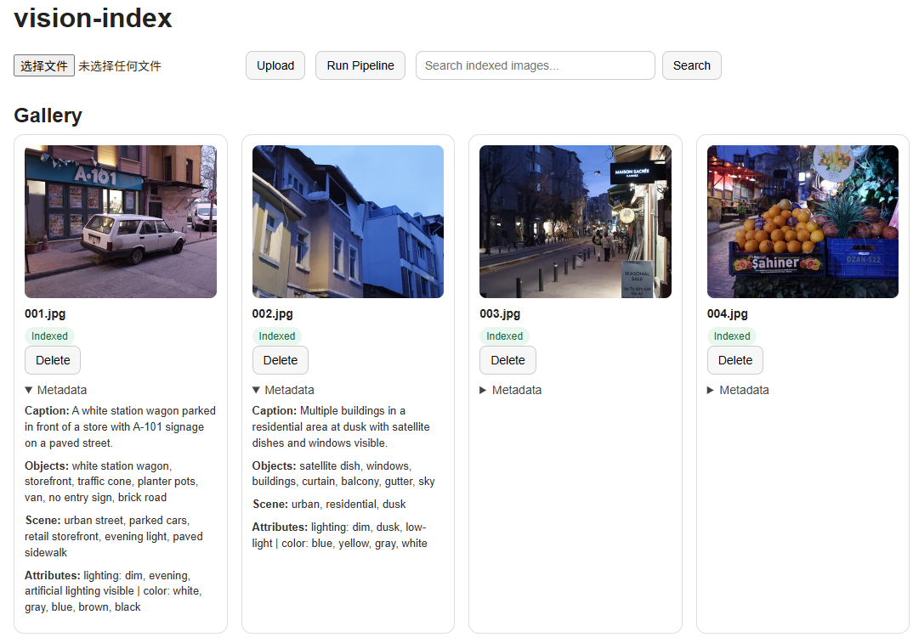

Personal AI Project
vision-index
A local image indexing and semantic search system that analyzes images with a vision-language model through Ollama and serves retrieval through a lightweight FastAPI dashboard.
- Scans or uploads images, generates thumbnails, extracts structured metadata, and stores search-ready indices.
- Combines SQLite metadata, Chroma embeddings, and field-aware reranking for natural-language image search.
- Built as a practical local-first AI application around ingestion, indexing, retrieval, and evaluation.